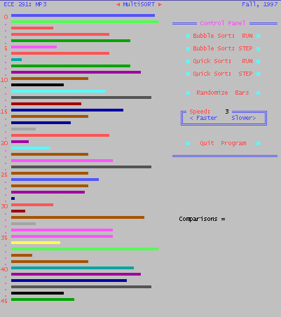

| ECE 291 |
Computer Engineering II |
Lockwood, Fall 1997 |
Machine Problem 3: Visual Sorting
| Assigned: |
October 7, 1997 |
| Due Date: |
October 24, 1997 |
| Purpose: |
Text-mode video, Mouse control, Recursive algorithms. |
| Points: |
50 |
Introduction
In this MP we will investigate two sorting algorithms: The bubble
sort and the recursive quick sort. We will then visualize the operation of
these sorting algorithms by creating a graphical display which
animates the sort as it progresses. Finally, a mouse-driven interface
will be provided a friendly interface to a human user.
Imagine looking up a telephone number in an unsorted telephone book.
Without having the data sorted, it would be necessary to scan though
all of the names in the book just to find an individual listing.
Searches and queries for data can be
performed far more quickly when the data set we are searching
through is in a known order.
Now imaging having the task of sorting all the names in the telephone book.
Each step of the process involves comparing a pair of names and
determining which name should be listed before the other.
In algorithms like the bubble sort, the running time of the sort increases
with the square of the number of items being sorted. In algorithms
like the quicksort, the time is proportional to n * log(n).
Sorting Algorithms: Bubble Sort
Possibly the simplest sorting algorithm is the Bubble Sort.
Bubble sort works by iterating through the array of numbers (n-1) times.
Each iteration results in the largest element being placed in its correct
location in the array. Every pass through the array, a comparison
is made between every element and the element next to it. If the
first element is larger than the second element, their positions are swapped.
The algorithm then moves on to the next pair of elements. Below is
the pseudo code for the Bubble Sort algorithm.
Pseudo Code: given an array from 0 to (n-1) elements.
for i = (n-1) to 0{
for j = to i{
if (Values[j] < Values[j+1])
swap Values[j], Values[j+1]
}
}
A sample run through an array of integers:
|
After Iteration:
|
Array
|
|
original array:
|
2 6 4 8 10 12 89
68 45 37 |
|
1
|
2 4 6 8 10 12 68
45 37 89 |
|
2
|
2 4 6 8 10 12 45
37 68 89 |
|
3
|
2 4 6 8 10 12 37
45 68 89 |
In this example the sort is complete after only 3 iterations, however the
Bubble sort continues to iterate through the array (n-1) times. A
more efficient sort could detect if the data is already in sorted order,
and terminate the outer loop of the algorithm if that is the case. (You
are not required to enhance the basic algorithm for this MP)
Because of the nested loops in the algorithm above, Bubble sort has
O(n^2) running time. For small data sets (n <
10) this is not a problem. However, the problem of sorting large
arrays of integers quickly becomes intractable when using Bubble sort.
A more efficient sorting algorithm is needed.
Sorting Algorithms: Quick Sort
We know look at a recursive sorting technique called Quick Sort.
The basic algorithm for an array of integers is as follows:
-
Partitioning Step: Take the first element of the unsorted
array of values and determine its final location in the sorted array.
This occurs when all values to the left of the element in the array are
less than the element, and all values to the right of the element in the
array are greater than the element. We now have one element in its
proper location and two unsorted sub arrays.
-
Recursive Step: Perform step 1 on each unsorted array.
Each time step 1 is performed on a sub array, another element is placed
in its final location of the sorted array, and two unsorted sub arrays
are created. When a sub array consists of one element, it must be
sorted, therefore that element is in its final location.
The basic algorithm seems simple enough, but how do we determine the
final position the first element of each sub array? As an example,
consider the following set of values (the element in bold is the partitioning
element or pivot element — it will be placed in its final position
in the sorted array):
| 37 2 6
4 89 8 10 12
68 45 |
Starting from the rightmost element of the array, compare each element
to 37 until an element less than 37 is found, the swap 37
and that element. The first element less then 37 is 12, so
37 and 12 are swapped. The new array is:
| 12 2 6
4 89 8 10 37
68 45 |
Element 12 is in italics to indicate that it was just swapped with 37.
Starting from the left of the array, but beginning with the element
after 12, compare each element to 37 until an element greater than
37 is found, then swap 37 and that element. The first
element greater than 37 is 89, so 37 and 89 are swapped.
The new array is:
| 12 2 6
4 37 8 10
89 68 45 |
Starting from the right, but beginning with the element before 89, compare
each element to 37 until an element less than 37 is found,
then swap 37 and that element. The first element less than 37
is 10, so 37 and 10 are swapped. Then new array is:
| 12 2 6
4 10 8 37
89 68 45 |
Starting from the left, but beginning with the element after 10, compare
each element to 37 until an element greater than 37 is found,
then swap 37 and that element. There are no more elements
greater than 37, so when we compare 37 to itself we know
that 37 has been placed in its final location of the sorted array.
Once this partitioning method has been applied on the above array, there
are two unsorted sub arrays. The sub array with values less than
37 contains 12, 2, 6, 4, 10, and 8. The sub array with values greater
than 37 contains 89, 68, and 45. The sort continues with both sub
arrays being partitioned in the same manner as the original array.
To sort the sub arrays, we simply make a recursive call to QuickSort, sorting
the sub arrays.
Without going into too much detail, Quick Sort represents a sort with
a best case running time of O(n lg(n)). Using even a small dataset,
such as this MP uses, this represents a large savings over Bubble Sort.
Try running MP3 and see for yourself. The worst case running time
of Quick Sort is still O(n^2) however. Can you determine the conditions
under which this exponential running time will result?
Problem Description

A Screen Shot of mp3
In this machine problem we will be using text-mode video graphics to illustrate
these sorting algorithms. The data we will be using will consist
of an array of bytes representing integers between 1 and n. Since
the text screen is only 80 columns wide, and since we want to leave room
for a control panel, we will make our integers range in length from between
1 and 46 or so. The actual value will depend on how you decide to
implement your user interface. The values we will be sorting will
be stored in the byte array Values. The maximum length of the bars
you will sort will be specified by Barwidth and the number of bars
you will sort will be specified by Numvals. Numvals can range
from 1 to 46. These are all byte-quantities. You will populate the
array with a random-number generator. As the sorting routines progress,
they will keep the running total number of comparisons in the variable
Compares. The variable Stepping will determine whether
or not the program steps interactively through a sort, or just runs straight
through. The delay during the sorting animation is determined by
Sortdelay.
You are encouraged to exercise artistic freedom when implementing the
user interface, keeping in mind that your interface must have all the necessary
elements: A display of up to 46 bars going down the side of the screen,
a counter for the number of comparisons, 5 buttons to perform the various
actions of the MP, and a speed control. You should display a scale
along the left hand side of the screen (as shown in the sample) and you
should leave enough room to display "pointers" which indicate what two
elements are currently being compared. In short, the best way to
discover the requirements of your MP is to play with the sample executable.
Keep in mind that regardless of where you decide to draw your buttons and
screen elements, the library routines will always draw the elements in
the same place (e.g., the bars will always start drawing in row 3, column
4 of the screen) so problems may arise if you combine your code with the
library routines.
80x50 Text Mode Programming
Programming in 80x50 text mode is a direct extension of the programming
for 80x25 text mode that you learned in class. You simply have 50
rows instead of only 25. The Video memory still starts at offset
B800. You do not need to do any page flipping; simply write to memory
as if you were using 80x25 text mode with 25 more available rows.
Getting the video card into 80x50 text mode requires a slight
trick with the video hardware. This code is given to you in the MP3.ASM
program framework.
The Procedures
You will implement the following procedures:
DrawTextScreen
Inputs: none
Outputs: static elements are drawn to the screen
Purpose:
This subroutine will draw out all the static, unchanging elements of
the graphical display. You are required to draw the scale running
down the left hand side of the screen running from 0 to 45. The control
panel will have six buttons: "Quick sort: Run," "Quick Sort: Step," "Bubble
Sort: Run," "Bubble Sort: Step," "Distribute Bars" and "Quit Program."
You will also require an up/down type speed control to adjust how fast
the sorting algorithm runs. You need to provide a counter which will
display the number of comparisons. You will fill in the actual number
of comparisons in Comparison. In short, anything
that does not get animated is drawn out with this subroutine. DrawScreen
is called only once at the beginning of the program.
DrawAllBars
Inputs: VALUES, Numvals
Outputs: draws the entire array of bars
Purpose:
This is the routine which will initially draw all of the bars to the
screen using DrawBar. When you swap elements in the array,
you will only redraw the two bars you are swapping, so initially some routine
needs to draw out all of the bars at once. This routine is called
at the beginning of the program and whenever you re-distribute the values
in the array.
DrawBar
Inputs: AX - the length of the bar to be drawn
DI - the index of the bar to be drawn
Outputs: draws a bar to the screen at array position DI, AX
characters in length.
Purpose:
This routine uses DI to determine which position to draw the bar in.
DI does not contain the actual offset into video memory of the beginning
of the bar; you will need to calculate that yourself. DI only contains
the number between 0 and 45 indicating the position where the bar is to
be drawn. Draw a bar AX characters in length. The determination
of the color of the bar is also important. It is essential
that all bars of length n be drawn in the same color. Without
this feature, the animation of the sorting algorithms is somewhat ineffective
at conveying what is going on. You must implement some way of making
sure that every bar of a particular length is always drawn the same color.
Do not draw invisible bars (e.g., black bars on a black background)
Comparison
Inputs: SI, DI - the indices of the two elements
being compared.
Outputs: Some indication of which two bars are being compared.
Comparisons - incremented by 1 and output to the screen.
Purpose:
When watching the algorithms run, it is essential to be able to see
which two bars are being compared. You will call this routine every
time you make a comparison between two array elements. This routine
will draw two pointers of some kind to indicate which two bars are currently
being compared. This routine will also update the Comparisons memory
variable to indicate the number of comparisons taking place, using binasc
to output that variable to the screen.
Delay
Inputs: Sortdelay - memory variable indicating
the length of the delay
Stepping - memory variable indicating whether or not we are stepping through
the sort.
Outputs: Burned CPU cycles.
Purpose:
This routine will simply burn Sortdelay x 0xFFFFh clock cycles to give
the program its "animated" quality. You will call this routine from
your sorts every time you make a comparison between two array elements.
If the Stepping memory variable is nonzero, this routine will wait for
a key to be pressed before allowing the sort to continue. If the
key hit is ESC, this routine will set Stepping to zero so the sort continues
on without any further keypresses.
Random
Quicksort
Inputs: Values - Memory array of bytes
SI - Index of the first element in the array to be sorted
DI - Index of the last element in the array to be sorted
Outputs: Values - Memory array of bytes in sorted order.
Animation drawn to screen.
Purpose:
Perform an animated Quick Sort on the array of bytes, Values.
It is here where you will make your calls to the other routines to do the
animation. Every time you compare two elements in the array,
you should call Delay and Comparison to generate the on-screen
animation. Only call these routines when you do a comparison between
two array elements. Do not, for example, call them when you compare
CX to zero for a looping condition. The quick sort algorithm is given
at the beginning of this document. Your sort should work correctly
for array sizes of 1 and larger..
Hints & Observations
-
Treat the bytes in the array as unsigned numbers
BubbleSort
Inputs: Values - Memory array of bytes.
SI - Index of the first element in the array to be sorted.
DI - Index of the last element in the array to be sorted.
Outputs: Values - Memory array of bytes in sorted order.
Purpose:
Perform an animated Bubble Sort on the array of bytes, Values.
The Bubble sort algorithm is given at the beginning of this document.
Everything stated for Quick Sort applies to this routine.
DistributeValues
Inputs: Values - Memory array of bytes
Numvals
Barwidth
Outputs: Values is filled with random numbers
Purpose:
This is the routine you will use to populate the array with random
numbers between 1 and Barwidth. You should use Random to generate
the random numbers. Do not generate any zero-length bars.
MouseControl
Inputs:
Outputs: AX - Number of the button the user clicked.
Purpose:
The mouse allows the user to press buttons on the screen. For this
MP, the "buttons" are the buttons which were drawn out during DrawTextScreen,
on the right hand side of the screen. When the user clicks the left mouse
atop or near a button, this routine returns a number in AX. The buttons
are numbered from top to bottom with the values 0 to 7 as follows:
Button Assignments
|
Value Returned in AX
|
Button Clicked
|
|
0
|
Bubble Sort: Run |
|
1
|
Bubble Sort: Step |
|
2
|
Quick Sort: Run |
|
3
|
Quick Sort: Step |
|
4
|
Distribute Values |
|
5
|
Increase Delay |
|
6
|
Decrease Delay |
|
7
|
Exit the program |
Hints & Obsertvations
-
The program spends most of the time in the MouseCtrl routine. The program
loops in this routine until the user has clicked on a button.
-
The mouse status is read via software interrupts. By loading the appropriate
values into registers and executing INT 33h, the location of the mouse
and the status of the buttons can be determined.The mouse interrupt functions
are documented in Sections 10.2 of the lab manual.
-
Notice that the mouse is initialized and made visible in main. You need
not repeat this code.
-
You may need to run the program in full-screen mode (hit [ALT-ENTER] in
win95).
Main
Purpose:
Your MAIN routine should implement the following Psuedo-code:
| Main()
Put display into 80x50 text mode (this code is
given)
Initialize mouse driver and make mouse pointer
visible (this code is given)
CALL DrawScreen
CALL DistributeValues
CALL DrawAllBars
MainLoop:
CALL MouseControl
IF (AX == one of the
sort buttons)
Draw "Sorting" message at bottom of screen
Reset Comparisons variable to 0
Set Stepping variable appropriately
Set SI and DI appropriately
Call the appropriate sort routine
Draw "Soring Complete" message at the bottom of screen
IF (AX = DistributeValues)
Call DistributeValues
Redraw the bars on the screen
IF (AX = Increase Delay
or Decrease Delay)
Increase or decrease Sortdelay
Print out the value of Sortdelay to the screen
IF (AX = Quit Program)
Quit the program
GOTO MainLoop |
Scoring
Points will be awarded for completion of each of these subroutines.
Your subroutines must perform all the functions of the library routines,
and must be interchangeable with them in order to recieve full credit.
The point values for each subroutine are listed below:
DrawTextScreen: 3 pts
DrawAllBars: 2 pts
DrawBar: 2 pts
Comparison: 2 pts
Delay: 3 pts
Random: 2 pts
QuickSort: 12 pts
BubbleSort: 8 pts
DistributeValues: 3 pts
MouseControl: 10 pts
Main: 3 pts
Preliminary Procedure
-
Copy the empty MP3 program (MP3.ASM), libraries (libmp3.lib, lib291.lib),
and Makefile from the network drive to your home directory with the following
command:
xcopy /s I:\ece291\mp3 F:\mp3
or download the same files from the web as mp3.zip.
-
As with the other MP's, run NMake to build an executable program using
the given MP3 library functions.
-
To receive full credit for the assignment, you need to implement each of
the subroutines described above with your own code. As given, the
MP3.ASM file will run the library versions of those subroutines
-
As with the other MP's, use CodeView to debug your program
Errors and Eratica
- Libmp3 version 1.1: Allows stepping when delay=0
- Libmp3 version 1.2: Bubblesort uses correct number of comparisons
- MP3.ASM version 1.2: Add EXTRN random and
EXTRN DistributeValues to MP2.ASM header; Remove
EXTRN EXTRN SwapBars from MP2.ASM header.
- libmp3 version 1.3: Fixed MouseControl Bug - it returned the incorrect values for faster and slower buttons.
Final Steps
-
Demonstrate MP3.EXE to a TA or to the instructor. You will then be
asked to recompile and demonstrate MP3 with different values for Numvals
and Barwidth. Your program must work for different values of these
variables. Once approved, you are ready to turn in your program
-
Be prepared to answer questions about any aspect of the operation of your
program. The TA's will not accept an MP if you cannot fully explain
the operation of your code.
-
Copy you programs to the handin floppy: A:\HANDIN YourWindowsLogin
- Print MP3.ASM. Use small fonts to save paper.
MP3.ASM (Program framework)
PAGE 75, 132
TITLE ECE291:MP3:MultiSORT:Fall97 Your Name Hand-in Date
COMMENT * Sorting Algorithms
ECE291: Machine Problem 3
Fall 1997 / Lockwood
Guest MP Author: Daniel Restelli
University of Illinois,
Dept. of Electrical & Computer Engineering
Ver 1.0 *
; =================== External Library Procedures =======================
; LIB291 Routines
EXTRN BINASC:near
EXTRN RSAVE:near
EXTRN RREST:near
EXTRN KBDIN:near
; LIBMP3 routines -- Comment out and replace with your own code!
EXTRN Delay:near
EXTRN DrawTextScreen:near
EXTRN DrawAllBars:near
EXTRN DrawBar:near
EXTRN QuickSort:near
EXTRN BubbleSort:near
EXTRN SwapBars:near
EXTRN Comparison:near
EXTRN MainRun:near
EXTRN MouseControl:near
EXTRN MP3Xit:near
;============================== Constants ===============================
TextVidSeg EQU 0b800h
BubbleRun EQU 0
BubbleStep EQU 1
QuickRun EQU 2
QuickStep EQU 3
Distribute EQU 4
Slower EQU 5
Faster EQU 6
QuitProg EQU 7
ESCKEY EQU 27
; ============================ Stack Segment ============================
stkseg segment stack
db 64 dup ('STACK ')
stkseg ends
; ============================ Program Data =============================
CSEG segment public 'CODE'
assume cs:CSEG, ds:CSEG, ss:stkseg, es:nothing
; ============================= Variables ===============================
NumVals db 46
BarWidth db 42
RandVal dw 3
Pbuff db 7 dup (5)
Values db 46 dup (6)
Stepping db 0
Compares dw 0
sortdelay db 2
PUBLIC NumVals, Barwidth, Randval, Pbuff
PUBLIC Values, Stepping, Compares, Sortdelay
; ============================= Procedures ==============================
; Your Subroutines (defined in handout)
; ---- Main Procedure ----
MAIN Proc FAR
; Initialise DS register
MOV AX, CSEG
MOV DS, AX
; Put display into 80x50 text mode
MOV AX, 1202h ; Sets to 400 line scan mode
MOV BL, 30h
int 10h
MOV AX, 3 ; Sets to 8x8 font
INT 10h
MOV AX, 1112h ; Enter text mode
MOV BL, 0
INT 10h
; Initialize the mouse hardware, Function 0000h
MOV AX, 0000h
INT 33h
; Display the mouse cursor, Function 0001h
MOV AX, 0001h
INT 33h
; ===== Comment out and put your main code here =====
CALL MainRun
; Put display into 80x50 text mode (to reset the screen)
EndIt: MOV AX, 1202h
MOV BL, 30h
int 10h
MOV AX, 3
INT 10h
MOV AX, 1112h
MOV BL, 0
INT 10h
CALL MP3Xit
MAIN ENDP
; ===================== End of Proceures & Data ==========================
CSEG ends
end main